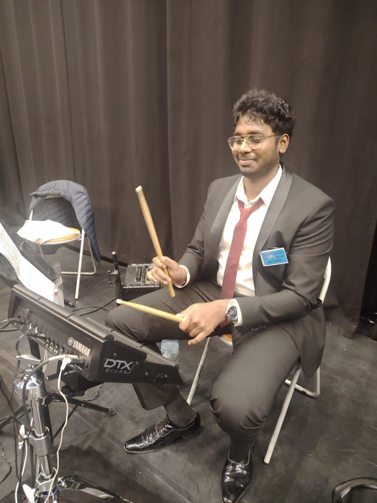
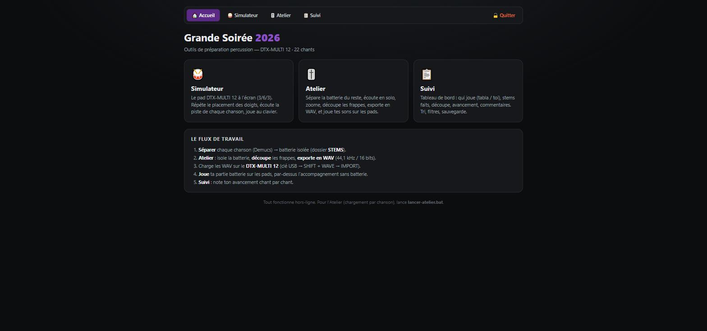

La technologie ne vaut que par ce qu’elle rend possible pour des personnes concrètes : des équipes métier qui gagnent du temps, des communautés qui s’organisent, des utilisateurs qui comprennent ce qu’ils voient. Ce portfolio est construit sur cette conviction, comme chaque projet qui y est présenté.
Mes valeurs
Le service et la transmission structurent ma manière de travailler : un logiciel réussi est d’abord un logiciel qui rend service, ensuite un logiciel que d’autres peuvent reprendre. Écrire un code responsable, c’est soigner la qualité et la maintenabilité, documenter ce qui a été compris et laisser le système plus lisible qu’on ne l’a trouvé.
Être un expert en ingénierie du logiciel humain, conscient et responsable engage aussi vis-à-vis des données. Travailler au contact de données de santé impose une éthique stricte : le RGPD n’est pas une contrainte administrative, c’est un engagement envers des patients réels. Anonymiser, minimiser, filtrer doit devenir un réflexe. La même conscience s’applique aux interfaces : accessibilité, sobriété, respect du temps et de l’attention de ceux qui les utilisent. La rigueur n’a de valeur que mise au service des autres.
Mon projet professionnel et personnel
Devenir un ingénieur logiciel complet, capable de couvrir toute la chaîne : comprendre le besoin métier, modéliser les données, développer, industrialiser, exploiter. À moyen terme, cela passe par la consolidation d’une double compétence en développement web et en ingénierie de données, par une montée en puissance sur l’architecture et les frameworks modernes (PHP objet avancé, Python appliqué à la data, API REST), et par la structuration progressive d’une activité indépendante déjà bien réelle.
Sur le plan personnel, le cap reste le même : continuer à mettre la technique au service de projets collectifs et associatifs, là où un logiciel bien conçu démultiplie l’énergie des bénévoles.
Mes principales qualités humaines
L’autonomie et la capacité d’auto-formation viennent en premier : apprendre seul un outil ou un langage pour répondre à un besoin réel est devenu un réflexe. Vient ensuite l’écoute, parce que traduire des besoins non techniques en solutions concrètes suppose de comprendre avant de proposer. S’y ajoutent la capacité à fédérer et à animer des collectifs, éprouvée jusqu’à plusieurs milliers de participants, la fiabilité et le sens du service, et enfin une capacité de prise de recul et d’autocritique que ce portfolio met en pratique page après page.
Mes principaux centres d’intérêt
La musique, pratiquée régulièrement aux percussions électroniques (Yamaha DTX Multi-12, Roland HPD-20) et au piano, jusqu’à l’animation musicale d’événements collectifs. L’engagement associatif, de la coordination d’événements jeunesse de grande ampleur aux missions de terrain comme brancardier, en passant par les maraudes de l’association SHARE. Les cultures et la transmission : une double culture franco-tamoule, des projets numériques bilingues au service de communautés, et un goût du cinéma, des mangas et des séries comme autant de lectures du monde. Le design et la création visuelle (dessin, pixel art, création de logos, motion design), une sensibilité qui nourrit directement mon travail d’interfaces. Le sport enfin, entre musculation et ping-pong, pour l’équilibre.
{kind=link}

{kind=link}
